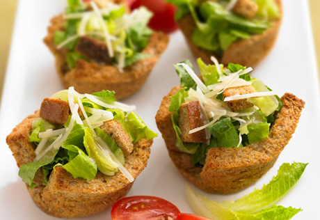

El Restaurant La Bona Mar és un restaurant que ofereix un ampli i variat menú i lespecialitat és el menjar del mar. El nostre personal és idoni i té una àmplia experiència en la preparació dels més coneguts plats del nostre país i també de l'estranger. Utilitzem els millors ingredients per obtenir els més deliciosos plats que seran el delit de tots vostès.
Amanides
Amanida Caeser
Servida amb rúcula , pinyons , pit de pollastre , crustóns i tomaquet.
Amanida de fruites
Servida amb enciam , formatge blau , presseg , nectarina i suc de llima.
Amanida Marilyn
Servida amb rúcula, tomaqet , ceba , nous i vinagreta de mel.
Amanida Audrey
Servida amb rúcula, carxofa ,vinagreta de poma.
Carns
Filet de vadella
Entrecot
Anec
Entranya
Peixos
Llubarro a la brasa
Bacallà amb tomaquet Salmó fumat Lluç a la marineraArrossos i Pastes
Arròs amb vedures i ou
Arròs caldós Risotto negre amb musclos Raviolis amb mus de foiePostres
CheeseCake
Brownie Flan de formatge TrufesSSugerenciassss - Els sugerim els plats del dia blalbalbla , que estan fets amb blablalbla ja que son especials en temporada de balbalbla..